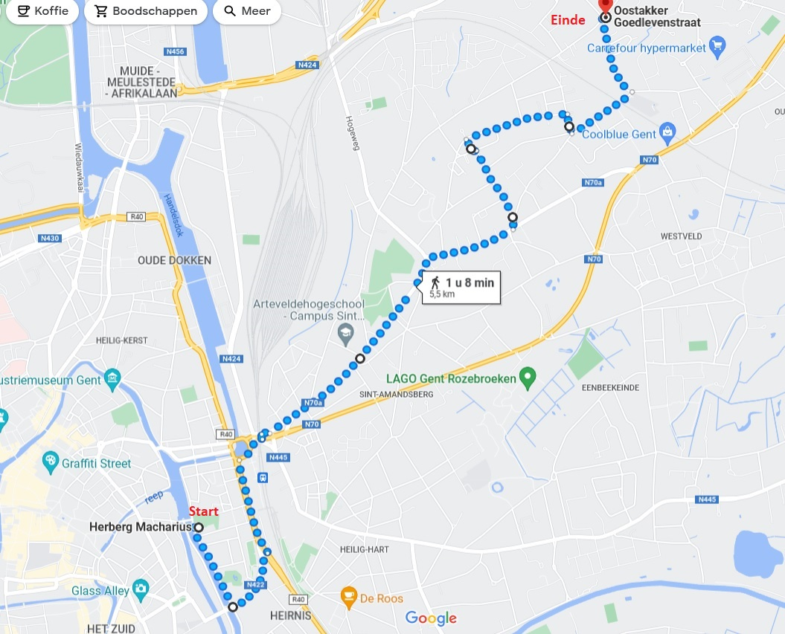
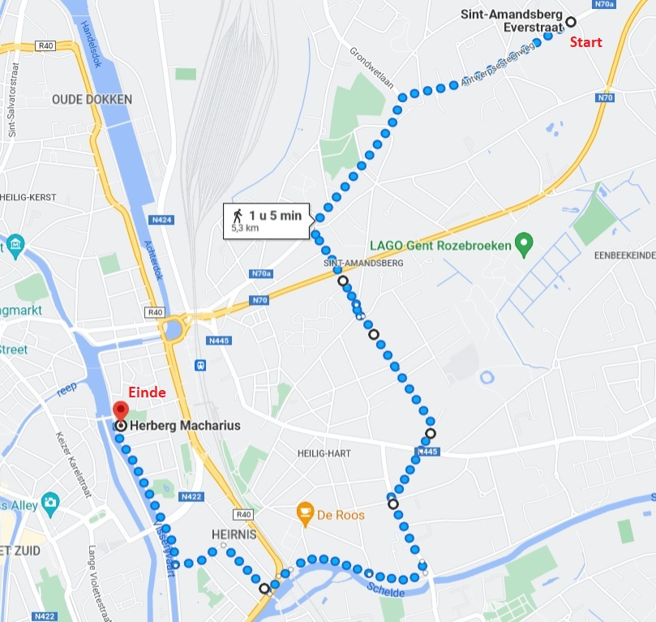

Neem bus 70, 71 of 72 richting Oostakker tot halte Goedlevenstraat (Wegens een omleiding, rijden deze bussen tot deze halte, al is dit niet te vinden in de routeplanner van De Lijn...)
Google Maps --- Opgelet: toont waarschijnlijk niet de juiste route! Gebruik in combinatie met het kaartje hieronder, of gebruik de .gpx.

Tip: je kan ook kiezen om 1.3km langs de steenweg over te slaan door een bus te nemen van halte Schoolstraat naar halte Zavelput - je kan hiervoor iedere bus nemen die aan halte Schoolstraat komt.
Google Maps --- Opgelet: toont waarschijnlijk niet de juiste route! Gebruik in combinatie met het kaartje hieronder, of gebruik de .gpx.

Tip: je kan ook kiezen om 1.3km langs de steenweg over te slaan door een bus te nemen van halte Everstraat naar halte Dienstencentrum - je kan hiervoor iedere bus nemen die aan halte Everstraat komt.
Welkom op het GPS-spel van Openbaar VerToer ter gelegenheid van Belmundo 2022!
Indien je de gegidste toer wilt volgen, hoef je hier niet te zijn.
Indien je het gps-spel met de bus wil spelen, kan je steeds op het busje rechts bovenaan tikken, om route
instructies te verkrijgen. Er zit sowieso een deel wandeling in (1.7km).
Indien je het gps-spel met de fiets of te voet wil spelen, kan je steeds op het fietsje bovenaan tikken, om
route instructies te verkrijgen. Bemerk dat dit dezelfde route als de bus is, en dat je te voet mogelijks
onvoldoende tijd hebt om alle standjes te bezichtigen. De route is ongeveer 12km.
Het eerste standje bevindt zich vlak bij aan Herberg Macharius. Het spel begint daar. --- Google Maps
Klik op de knop "Ben ik aan Herberg Macharius?" hieronder om te controleren of de locatie tracking werkt. Indien je
een foutmelding krijgt, staan je permissies waarschijnlijk niet juist.
Het gps-spel wordt volledig in browser gespeeld. Er wordt geen informatie naar een server gestuurd . Je vooruitgang wordt op jouw apparaat opgeslagen.
Je zal foto's langs de route moeten vinden. Iedere gevonden foto zal je wat meer informatie geven rond openbaar vervoer. Op het einde van iedere fase kan je sowieso al deze informatie zien en eventueel nog eens op het gemak bekijken.